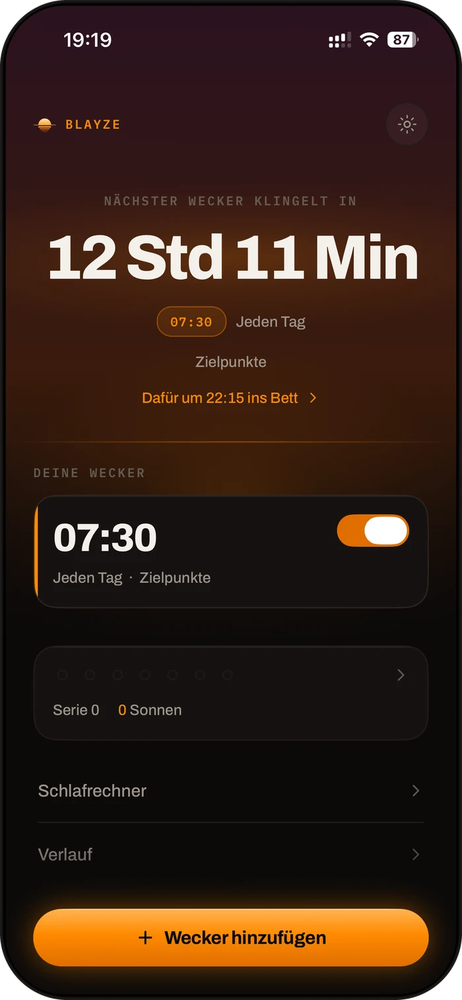
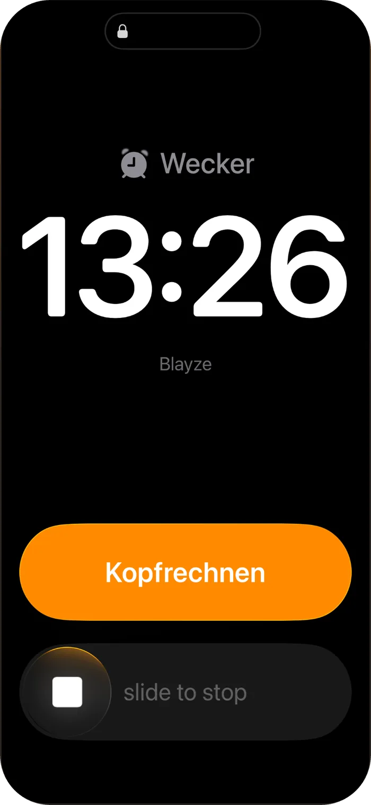
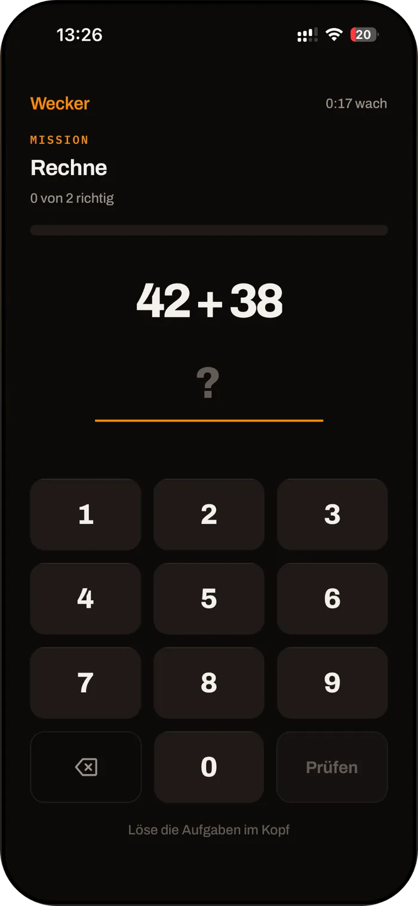
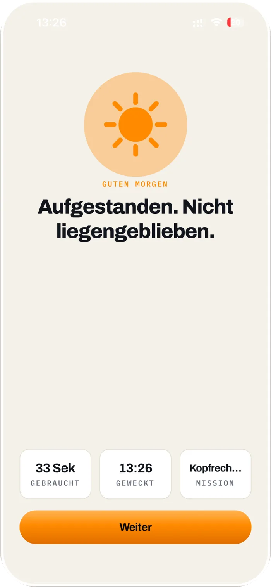

Drei Wecker gestellt. Alle ausgemacht.
Nicht mal gemerkt.
Der Wecker, den du nicht wegdrücken kannst.
Blayze hat keine Schlummertaste. Er klingelt, bis du deine Mission gelöst hast. Und wischst du ihn weg, kommt er nach einer Minute wieder.
Laden imApp Store
Kennst du das?
Tipp an, was auf dich zutrifft.
Wenn hier nichts passt, brauchst du Blayze nicht. Wenn doch, lies weiter.
Es liegt nicht an dir
Du drückst nicht, weil du schwach bist. Du drückst, weil die Taste da ist.
Um halb sieben entscheidet nicht der Mensch, der am Abend den Wecker gestellt hat. Es entscheidet dein Halbschlaf, und der nimmt jeden Ausweg, den man ihm anbietet.
Schläfst du nach dem Klingeln wieder ein, beginnt ein neuer Schlafzyklus. Der dauert rund 90 Minuten, der Wecker reißt ihn nach 9 ab. Daher kommt das Gerädertsein. Nicht vom Aufstehen, sondern vom Abbrechen.
So funktioniert Blayze
Abends entscheiden. Morgens nur noch lösen.
Die Entscheidung fällst du, solange du wach bist. Am Morgen bleibt deinem Halbschlaf nichts mehr zu entscheiden, nur noch eine Aufgabe.
Am Abend
Du legst fest, wie der Morgen läuft
Weckzeit und Mission. Blayze rechnet dir aus, wann du ins Bett solltest, und du kannst die Mission vorher einmal in Ruhe ausprobieren.
Am Morgen
Keine Taste, keine Verhandlung
Der Wecker hört erst auf, wenn die Mission gelöst ist. Kopfrechnen, Schütteln, Schritte, ein Foto vom Bad. Danach bist du wach.
Wenn du ihn wegwischst
Er kommt wieder
Nach einer Minute, nach zwei, nach drei. Bis zu einer Stunde lang, bis die Mission gelöst ist.
Und wenn ich ihn einfach wegwische?
Dann klingelt er gleich noch mal.
Hinter jedem Wecker liegt eine Kette aus Weckrufen. Wegwischen hält ihn auf, aber nicht lange. Sie endet erst, wenn du die Mission gelöst hast.
Und wenn das Handy auf lautlos ist?
Ab iOS 26 weckt Blayze über Apples eigenen Systemwecker. Der klingelt, egal wie dein iPhone eingestellt ist.
- Klingelt im Stummmodus
- Klingelt bei aktiviertem Fokus
- Klingelt bei geschlossener App
Auf iPhones vor iOS 26 weckt Blayze über Mitteilungen. Die klingeln im Stummmodus nicht, darauf weist dich die App hin.

Was du schon versucht hast
Jeder Trick hat eine Lücke. Dein Halbschlaf findet sie.
Versuch
Drei Wecker hintereinander
Nach einer Woche drückst du alle drei aus, ohne richtig wach zu werden. Mehr Wecker trainieren nur das Ausmachen.
Versuch
Handy ans andere Ende des Zimmers
Du stehst auf, machst aus und legst dich wieder hin. Zwei Schritte reichen nicht, um wach zu werden.
Versuch
Einfach mehr Disziplin
Hält, solange der Abend gut war. Am ersten müden Morgen gewinnt wieder die Taste.
Blayze nimmt die Lücke weg.
Keine Taste, die man im Halbschlaf trifft. Ausmachen geht nur, indem du wach wirst.

Zwölf Missionen in vier Stufen
So hart, wie du es brauchst. Nicht härter.
Du fängst sanft an und drehst hoch, wenn du dich gewöhnt hast. Für jeden Körper gibt es eine Variante, die passt. Und am Abend kannst du jede Mission einmal ohne Ton ausprobieren, damit dich morgens nichts überrascht.
Stufe 01 · Sanft
- Zielpunkte treffen
- Kopfrechnen
- Einen Satz abtippen
Stufe 02 · Kopf
- Zahlenfolge merken
- Farbfolge nachtippen
- Wort rückwärts eingeben
Stufe 03 · Bewegung
- Schütteln
- Dreimal drehen
- Schritte gehen
- Kniebeugen
Stufe 04 · Raus aus dem Bett
- Hinterlegten Gegenstand fotografieren
- Barcode scannen
Blayze ist unbequem. Das ist der ganze Punkt.
Ein Wecker, der dich in Ruhe lässt, wenn du ihn darum bittest, hast du schon. Blayze lässt nicht mit sich reden. Dafür musst du morgens auch nicht mit dir reden.
Die Rechnung
Was dich das Schlummern kostet.
Zweimal schlummern sind gut achtzehn Minuten. Fünf Tage die Woche, aufs Jahr gerechnet, sind das mehr als drei volle Tage. Blayze rechnet dir deine eigene Zahl aus.
18Minuten pro Morgen
Zweimal geschlummert, zweimal neun Minuten.
78Stunden im Jahr
Bei fünf Tagen die Woche über zweiundfünfzig Wochen.
3+volle Tage
Zeit, die nicht als Schlaf zählt und trotzdem weg ist.

Der Morgen danach
Du bist der Mensch, auf den du dich morgens verlassen kannst.
Die erste Stunde gehört wieder dir. Kein Hetzen, kein schlechtes Gewissen, bevor der Tag angefangen hat. In der App geht der Himmel ins Helle, und du siehst, wie lange es vom Klingeln bis zum Aufstehen gedauert hat.
Gesammelte Sonnen
Eine pro gelöster Mission. Sie bleiben, auch wenn ein Morgen schiefgeht.
Serie
Die Tage hintereinander, an denen du direkt aufgestanden bist. Sie startet neu, ohne Kommentar.
Fragen, die du dir gerade stellst
Ehrlich beantwortet.
Was, wenn ich mit Blayze verschlafe?
Ab iOS 26 weckt dich Apples eigener Systemwecker, auch auf lautlos, im Fokus und bei geschlossener App. Die App zeigt dir außerdem, was du noch einstellen solltest, damit er sicher klingelt, zum Beispiel das Handy über Nacht zu laden.
Für Tage, an denen es wirklich zählt, gibt es kritische Tage: doppelte Mission und eine Vorwarnung am Abend.
Kann ich ihn nicht trotzdem irgendwie ausmachen?
Wegwischen bringt nichts, er kommt nach einer Minute wieder. Wer es unbedingt will, kann natürlich das iPhone ausschalten oder die App löschen. Um halb sieben im Halbschlaf ist Aufstehen aber der kürzere Weg. Genau dafür ist Blayze gebaut.
Was, wenn mir die Mission zu schwer ist?
Du wählst die Stufe selbst und kannst sie jederzeit ändern. Am Abend probierst du die Mission einmal ohne Ton aus. Für jeden Körper gibt es eine Variante, die passt, niemand muss morgens Kniebeugen machen.
Wozu bezahlen? Mein iPhone hat doch einen Wecker.
Der hat eine Schlummertaste, und an der scheitert der Morgen. Blayze kostet im Jahresabo 0,77 € pro Woche. Rechne dagegen, was dich achtzehn Minuten jeden Morgen kosten.
Brauche ich ein Konto?
Nein. Kein Konto, keine Anmeldung, keine E-Mail. Deine Wecker liegen auf deinem iPhone.
Wie kündige ich?
In den Einstellungen deines iPhones unter Abos, mit zwei Tipps. Kündigst du in den ersten sieben Tagen, wird nichts abgebucht.
Gibt es Blayze für Android?
Im Moment nur für iPhone.
Preis
Sieben Morgen, um es zu beweisen.
Steh sieben Tage lang beim ersten Klingeln auf. Wenn nicht, kündigst du und zahlst nichts.
Jahr · mit Testphase
39,99 €im Jahr
Die ersten 7 Tage gratis. Danach 0,77 € pro Woche.
Laden imApp StoreMonat · ohne Testphase
7,99 €im Monat
Sofort abgerechnet, jederzeit kündbar.
Der Morgen beginnt am Abend
Wann willst du morgen aufstehen?
Blayze rechnet von deiner Weckzeit zurück. Ein Schlafzyklus dauert rund 90 Minuten, das Einschlafen etwa 14.
Heute Abend einrichten
Morgen früh klingelt er zum ersten Mal.
Laden, Weckzeit stellen, Mission wählen. Eine Minute, kein Konto. Die ersten sieben Tage kosten nichts.
Blayze ist neu, und wir sagen das offen: Es gibt noch keine Bewertungen und keine Nutzerzahlen. Es gibt die App und sieben Tage, in denen du sie prüfen kannst.
Laden imApp StoreSieben Tage gratis · Jederzeit kündbar